Lecture 06 — Edge Detection
Lecture 6
Kaveh Fathian
Computer Science Department, Colorado School of Mines
Learning Objectives
By the end of this lecture, you should be able to:
Distinguish image edges from meaningful object boundaries and identify different physical causes of edges.
Approximate image derivatives using finite differences and explain how derivative filters combine differentiation and smoothing.
Compute gradient magnitude and direction, and relate them to edge strength and orientation.
Explain why differentiation amplifies noise and how Gaussian smoothing, Gaussian derivatives, and the Laplacian of Gaussian help detect edges.
Explain the stages of Canny edge detection, including non-maximum suppression and hysteresis thresholding.
Apply edge detection in OpenCV and predict how smoothing and threshold choices affect the result.
Edge Detection
Where Are the Object Boundaries?
Which contours separate the elephants from the background or from each other?
Would you also mark the wrinkles, shadows, and grass as object boundaries?
Human-Annotated Boundaries
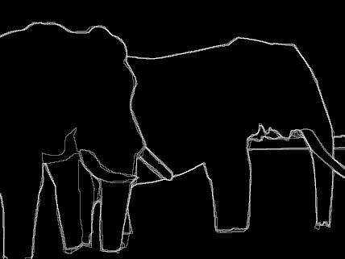
Human annotations emphasize meaningful contours, while omitting much of the texture.
We use shape and context to interpret boundaries, even where the intensity contrast is weak.
Edge Detection
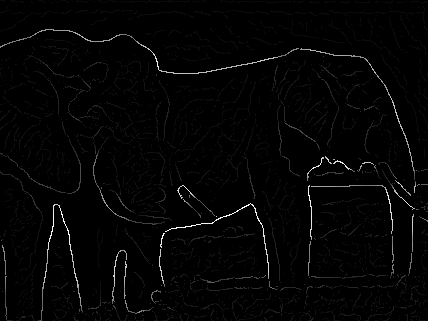
An edge detector responds to local changes in image intensity.
These changes can come from object boundaries, but also from texture, shadows, and surface markings.
Edges and Object Boundaries

Edge strength does not necessarily correspond to our perception of boundaries.
A strong intensity change may occur within an object, such as a wrinkle or shadow.
An important object boundary may have weak contrast when neighboring regions have similar brightness.
Where are the object boundaries?
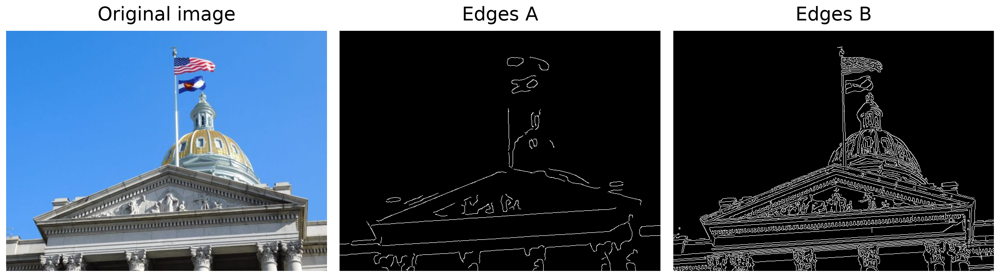
Which result better matches the boundaries you perceive? Why?
Should every visible change in brightness count as an edge?
Boundaries Can Be Ambiguous — Even for Us!
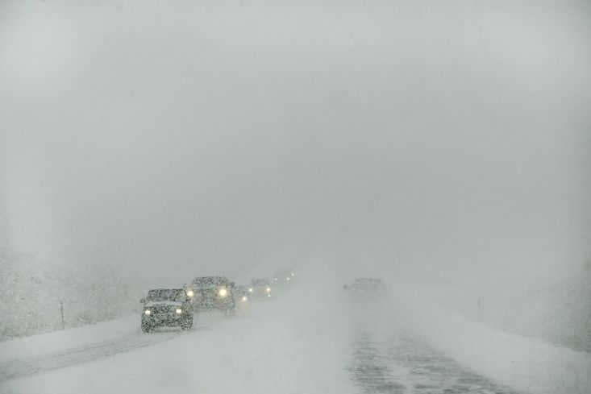
Where does the road end, and where do the snow-covered surroundings begin?
You can recognize vehicles ahead, but can you trace their complete outlines?
Do the strongest edges identify the most important boundaries?
Applications of Edges and Boundaries
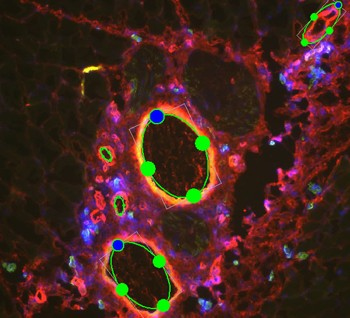
Tissue engineering
Identify and count blood vessels.
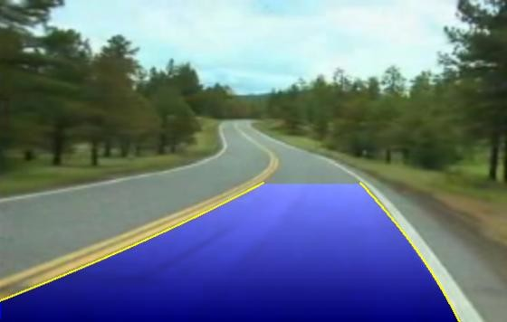
Autonomous vehicles
Detect lane markings and road boundaries.
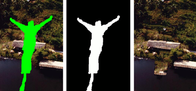
Image inpainting
Define a region to remove and fill.
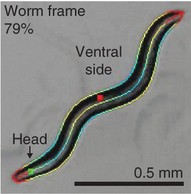
Behavioral genetics
Trace worm contours to study shape and motion.
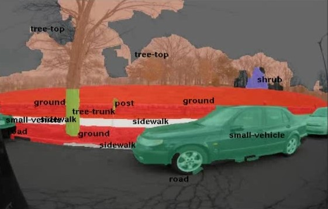
Semantic scene segmentation
Delineate regions such as roads, vehicles, and trees.
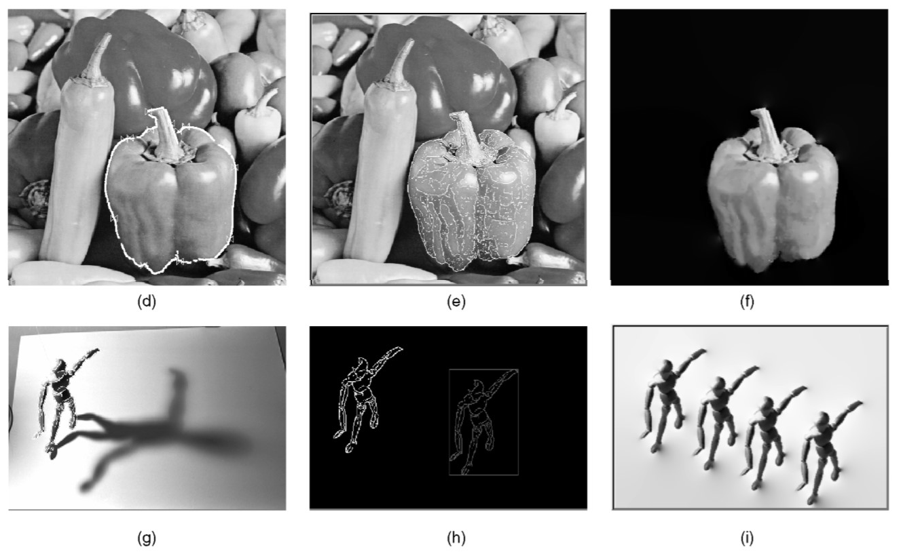
Interactive image editing
Follow object boundaries for selection and editing.
What Causes an Edge?
Can you find edges caused by different physical properties of the scene?
Surface Orientation Discontinuity
At the wall–floor junction, the surface changes direction: its surface normal changes.
Differently oriented surfaces can receive different amounts of light, producing an intensity edge.
Depth Discontinuity
Across the wall’s outline, the visible surface changes from the nearby wall to the distant landscape.
This is an occlusion boundary: the wall blocks our view of what lies behind it.
Surface Color Discontinuity
The black outlines and colored paint create edges within the same wall surface.
The surface’s reflectance changes, without requiring a change in depth or orientation.
Illumination Discontinuity
The shadow boundary separates sunlit and shaded parts of the same ground surface.
The illumination changes, even though the surface continues across the edge.
What Are Image Edges?
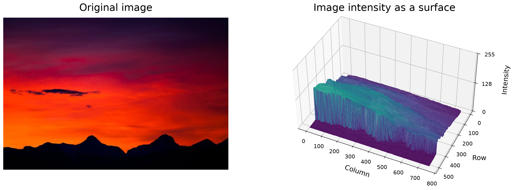
Surface height represents grayscale intensity at each pixel.
Edges occur where intensity changes sharply over a short distance. Look for the steep transition along the mountain silhouette.
Edge Detection
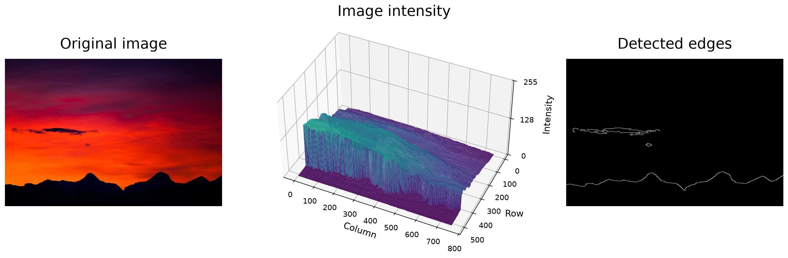
Edge detection
Identifying locations in an image where intensity changes sharply over a short distance.
Detecting Edges
How could we detect sharp changes in image intensity?
Take derivatives.
- Slowly varying intensity gives a small derivative.
- Sharp changes give large positive or negative responses.
How do we differentiate a discrete image—or any other sampled signal?
Use finite differences.
For samples spaced one pixel apart:
\[ \left.\frac{dI}{dx}\right|_{x=n} \approx \frac{I[n+1]-I[n-1]}{2}. \]
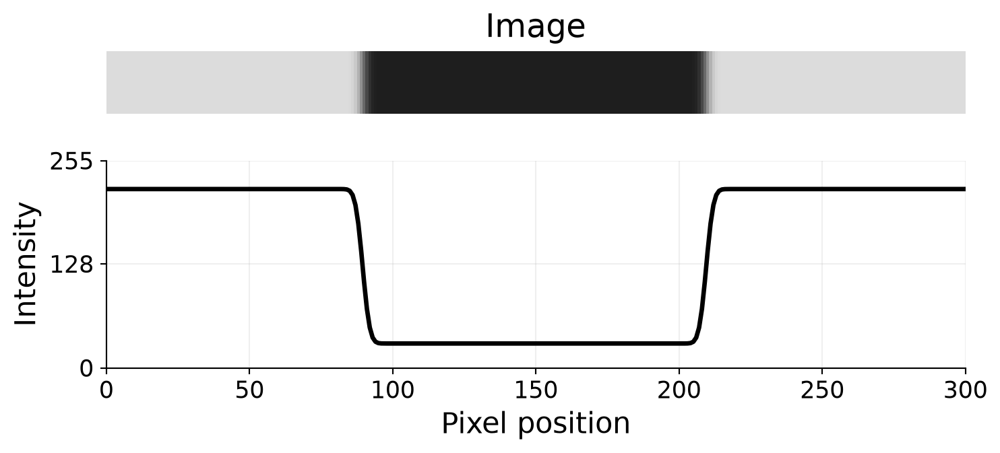
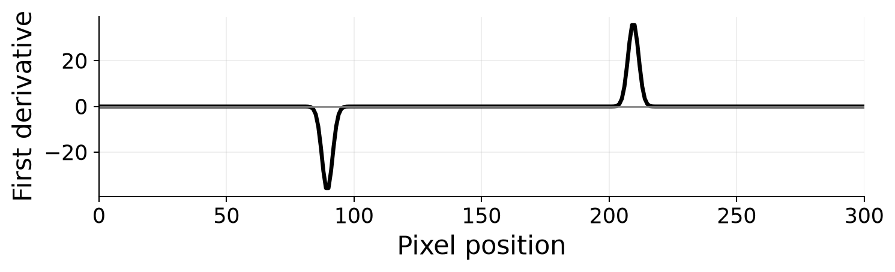
Derivatives from Pixel Differences
Continuous signal
Forward difference definition:
\[ I'(x)= \lim_{\Delta x\to 0} \frac{I(x+\Delta x)-I(x)}{\Delta x} \]
Central difference definition:
\[ I'(x)= \lim_{\Delta x\to 0} \frac{I(x+\Delta x)-I(x-\Delta x)} {2\Delta x} \]
Discrete signal
With one-pixel spacing, the forward difference is
\[ I'[n]\approx I[n+1]-I[n] \]
The centered difference is
\[ I'[n]\approx \frac{I[n+1]-I[n-1]}{2} \]
- Forward difference uses the center and right neighbor, making the estimate asymmetric.
- Centered difference uses both sides and is more accurate.
- The denominator is \(2\) because the neighbors are two pixels apart.
Derivative as a Filter
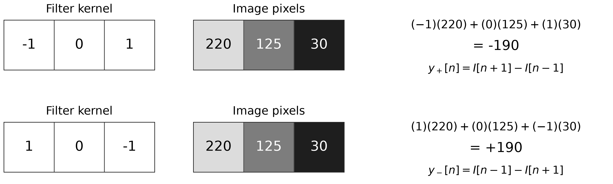
- When the kernel is centered on 125, its zero coefficient means the output depends only on the left and right neighbors.
- Reversing the kernel reverses the response’s sign.
- The factor \(\tfrac12\) is often omitted in kernels. This doubles the response, but does not affect its sign or locations of extrema.
Image Derivative via Filtering
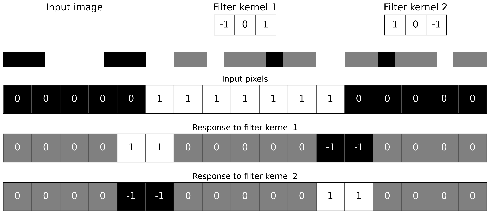
- Filtered image: −1 = dark, 0 = mid-gray, +1 = bright.
Reminder: Sobel Filters
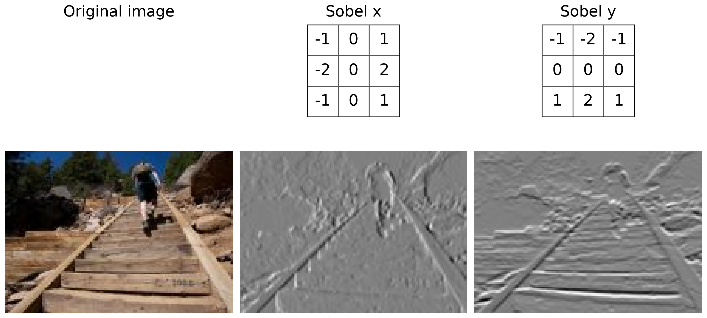
- Sobel x measures changes across columns and emphasizes vertical edges.
- Sobel y measures changes across rows and emphasizes horizontal edges.
Decomposing the Sobel Filters
Each Sobel kernel is the product of a column vector and a row vector:
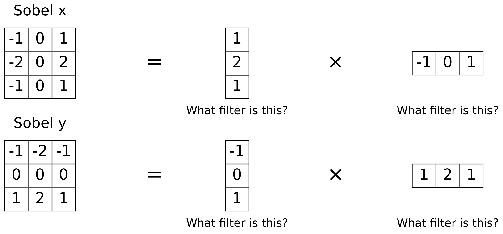
| Filter | Column vector | Row vector |
|---|---|---|
| Sobel x | Vertical weighted smoothing | Horizontal derivative |
| Sobel y | Vertical derivative | Horizontal weighted smoothing |
Sobel combines differentiation in one direction with smoothing in the perpendicular direction.
Several Derivative Filters
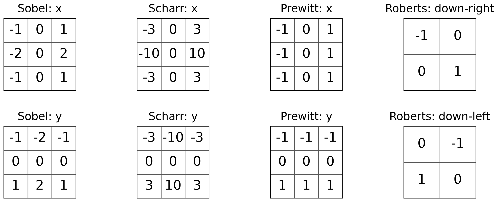
- Sobel, Scharr, and Prewitt combine a derivative with different perpendicular smoothing weights.
- Roberts measures intensity change along the down-right and down-left directions in a \(2\times2\) neighborhood.
How are these filters related? How could we build a derivative filter larger than \(3\times3\)?
Comparing Derivative Filters
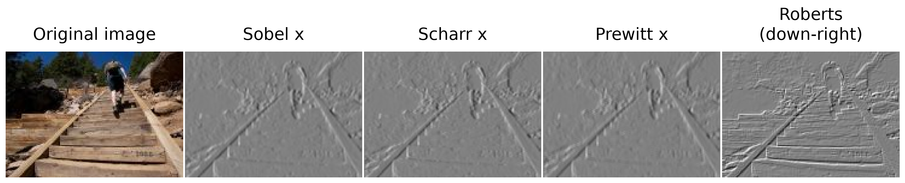
- All responses use a common signed grayscale scale: zero is mid-gray.
- Sobel, Scharr, and Prewitt measure horizontal intensity change; this Roberts kernel measures change in the down-right direction.
- Roberts uses a smaller neighborhood, with its derivative estimate centered between pixels.
Computing Image Gradients
Step 1: Choose derivative filters
- Select kernels \(h_x\) and \(h_y\) that approximate intensity changes in the horizontal and vertical directions.
Step 2: Filter the image to compute derivatives
- Using filtering:
\[ \begin{aligned} I_x &= h_x\, \otimes \,I\\ I_y &= h_y\,\otimes \,I \end{aligned} \]
Step 3: Form the gradient and compute its magnitude and direction
\[ \underbrace{ \nabla I= \begin{bmatrix} I_x\\ I_y \end{bmatrix} }_{\text{Gradient}} \qquad \underbrace{ M=\sqrt{I_x^2+I_y^2} }_{\text{Magnitude}} \qquad \underbrace{ \theta=\operatorname{atan2}(I_y,I_x) }_{\text{Direction}} \]
Direction is undefined where \(M=0\).
Step 1: Choose Derivative Filters
Sobel filters for intensity changes in the x and y directions:
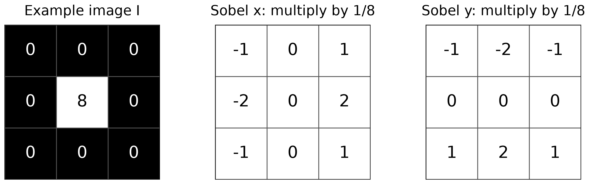
- Using intensities 0 and 8 to keep math simple.
- The factor \(\tfrac18\) scales down Sobel response.
- Image coordinates: x increases to the right, and y increases downward.
Step 2: Filter the Image to Compute Derivatives
Filter the image with each kernel to obtain two derivative images: \(I_x\) and \(I_y\).
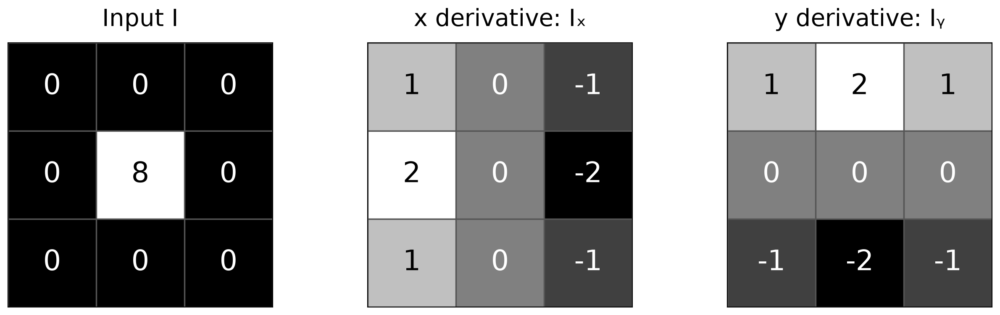
- Our boundary rule: repeat the nearest boundary pixel so both outputs remain \(3\times3\).
- Immediately left of the bright pixel, \(I_x=(2\times8)/8=2\) and \(I_y=0\).
- At the center, opposite contributions cancel: both derivatives are zero.
Step 3: Compute Gradient Magnitude
The two derivatives form a vector at every pixel:
\[ \nabla I= \begin{bmatrix} I_x\\ I_y \end{bmatrix}, \qquad M=\|\nabla I\|=\sqrt{I_x^2+I_y^2}. \]
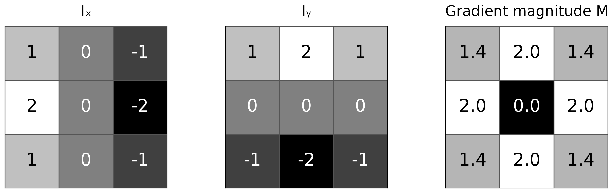
- Magnitude measures how strongly intensity changes, regardless of direction.
- Magnitudes are nonnegative (displayed values are rounded).
Step 3: Compute Gradient Direction
Use both signed derivatives to determine the direction:
\[ \theta=\operatorname{atan2}(I_y,I_x). \]
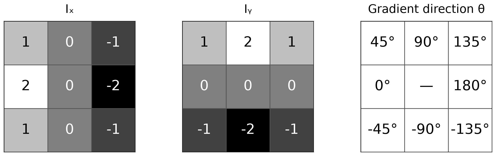
- The gradient points toward the greatest increase in intensity, perpendicular to a local edge.
- With image coordinates: 0° = right, 90° = down, 180° = left, −90° = up.
- The center has zero magnitude, so its direction is undefined, shown as —.
Image Gradient Example
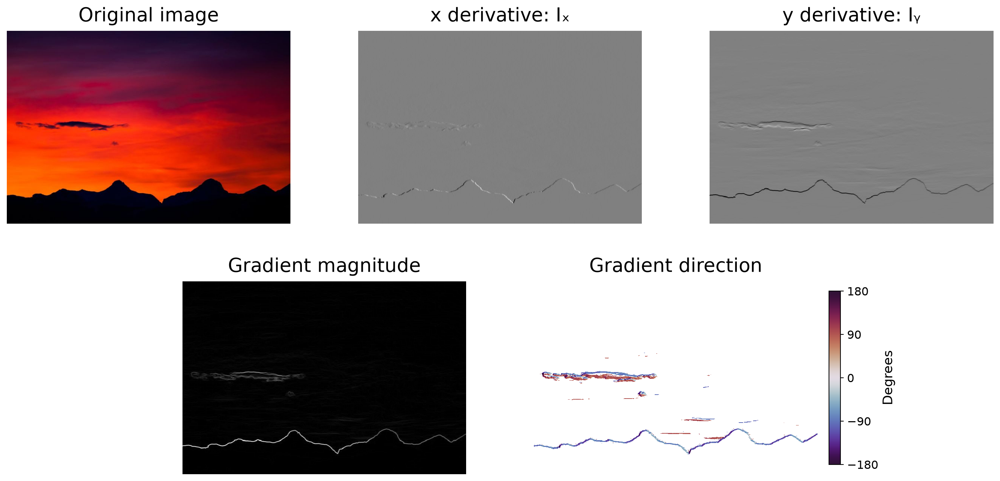
How does the gradient direction relate to the orientation of edges in the image?
Computing Image Gradients in Python
# Convert the color image to floating-point grayscale.
I = cv2.cvtColor(I_gradient_color, cv2.COLOR_BGR2GRAY)
I = I.astype(np.float32) / 255.0
# Normalized Sobel filters for x and y derivatives.
h_grad_x = np.array([[-1, 0, 1],
[-2, 0, 2],
[-1, 0, 1]], dtype=np.float32) / 8
h_grad_y = h_grad_x.T.copy()
# Filter the image; -1 preserves the floating-point input type.
Ix = cv2.filter2D(I, -1, h_grad_x, borderType=cv2.BORDER_REPLICATE)
Iy = cv2.filter2D(I, -1, h_grad_y, borderType=cv2.BORDER_REPLICATE)
# Gradient magnitude.
M = np.sqrt(Ix**2 + Iy**2)
# Gradient direction in degrees.
theta = np.degrees(np.arctan2(Iy, Ix))
# For display, hide directions where the gradient is weak.
threshold = 0.05 * M.max()
theta[M <= threshold] = np.nanHow Do We Find the Edge of This Signal?
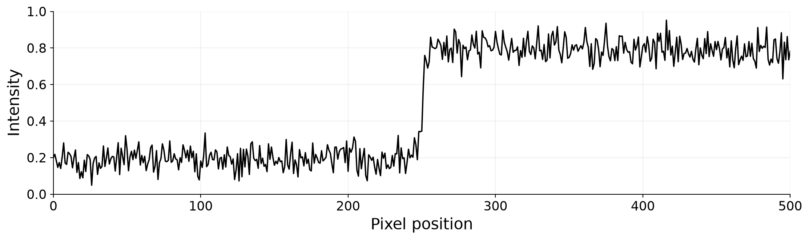
- The signal contains a large intensity transition and many smaller fluctuations.
How can we distinguish the edge from noise?
Differentiation Is Sensitive to Noise
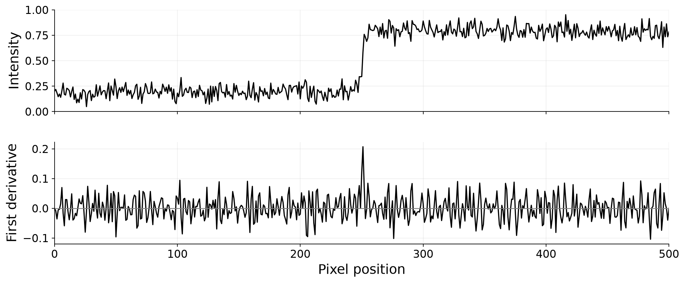
- The derivative responds to rapid changes caused by both the edge and noise.
- Noise creates many positive and negative responses.
- A large derivative alone does not guarantee a meaningful edge.
What could we do before taking the derivative?
Smooth Before Differentiating
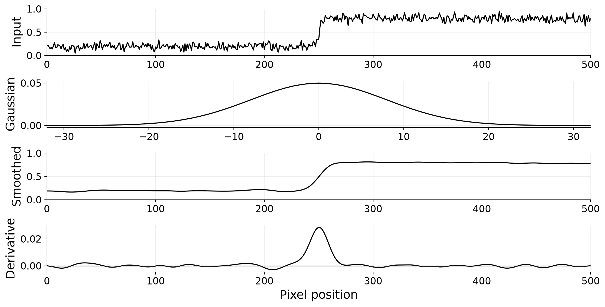
- Gaussian smoothing reduces rapid noise fluctuations before differentiation.
- How much should we smooth? Increasing \(\sigma\) reduces noise, but broadens transitions and can merge nearby edges.
Derivative of Gaussian
We can combine smoothing and differentiation into one filter.
\[ \frac{d}{dx}\bigl(G_\sigma * I\bigr) = \left(\frac{dG_\sigma}{dx}\right)*I, \qquad *\text{ denotes convolution}. \]
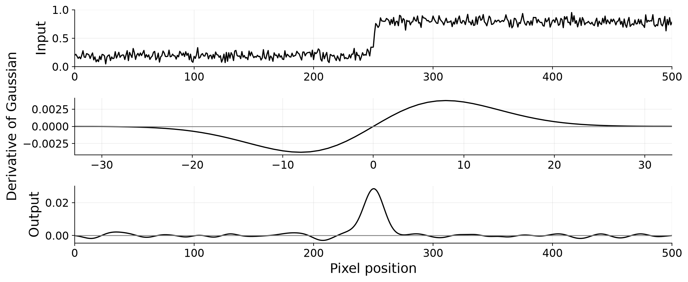
- This gives the same result as smoothing and saves computation.
Second Derivatives and the Laplacian
- A second derivative measures how the first derivative changes.
- With one-pixel spacing, compare the differences on either side of a pixel:
\[ d_{\mathrm{right}}=I[n+1]-I[n], \qquad d_{\mathrm{left}}=I[n]-I[n-1]. \]
\[ I''[n]\approx d_{\mathrm{right}}-d_{\mathrm{left}} = I[n+1]-2I[n]+I[n-1]. \]
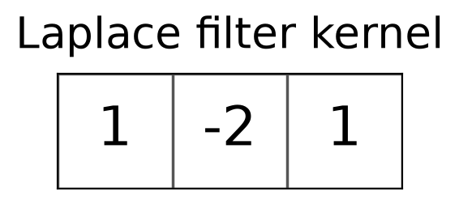
- At a smooth peak of the first derivative, the second derivative changes sign.
- In 2D, the Laplacian adds the second derivatives in both directions:
\[ \nabla^2 I= \frac{\partial^2 I}{\partial x^2} + \frac{\partial^2 I}{\partial y^2}. \]
Laplacian of Gaussian: Zero Crossings
Smooth first, then take the second derivative—or combine both operations into one filter.
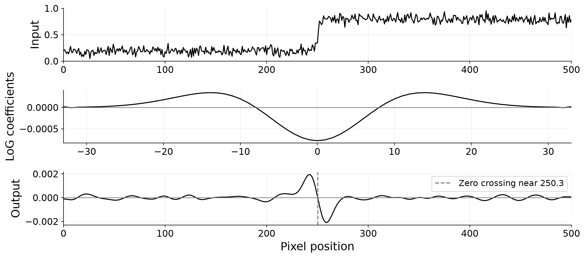
- A first-derivative peak corresponds to a zero crossing of the second derivative.
- The crossing (sign change) can occur between samples; no sample needs to equal zero exactly.
- Noise also produces zero crossings. We need sufficient response strength to identify useful edge candidates.
Gaussian Filter and Its Derivatives in 2D
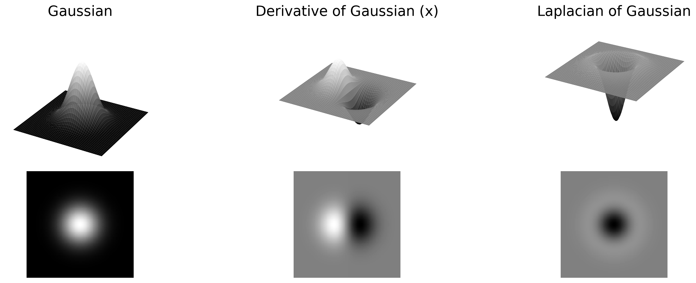
\[ G_\sigma(x,y)= \frac{1}{2\pi\sigma^2} e^{-\frac{x^2+y^2}{2\sigma^2}} \]
\[ \frac{\partial G_\sigma}{\partial x} = -\frac{x}{\sigma^2}G_\sigma \]
\[ \nabla^2G_\sigma = \frac{x^2+y^2-2\sigma^2}{\sigma^4}G_\sigma \]
In the derivative kernel images, gray represents zero, white positive values, and black negative values.
Gaussian and Derivative Filter Outputs
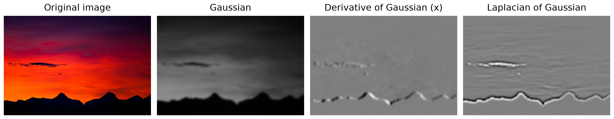
- Gaussian smoothing reduces fine detail and noise.
- The x derivative responds to intensity changes along the horizontal direction.
- The Laplacian combines second derivatives in x and y. Its zero crossings are candidate edge locations.
Which boundaries stand out, and which texture details also produce responses?
Computing These Outputs in OpenCV
# Convert the color image to floating-point grayscale.
image_color = cv2.imread("assets/06_edge_detection/rockies_sunset.jpg")
I = cv2.cvtColor(image_color, cv2.COLOR_BGR2GRAY)
I = I.astype(np.float32) / 255.0
# Construct a 2D Gaussian from a 1D Gaussian.
sigma = 5.0
radius = int(4 * sigma)
g = cv2.getGaussianKernel(2 * radius + 1, sigma).astype(np.float32)
G = g @ g.T
# Pixel coordinates relative to the kernel center.
coordinates = np.arange(-radius, radius + 1, dtype=np.float32)
X, Y = np.meshgrid(coordinates, coordinates)
# Gaussian x derivative
Gx = -(X / sigma**2) * G
# Laplacian
LoG = ((X**2 + Y**2 - 2 * sigma**2) / sigma**4) * G
LoG -= LoG.mean() # Ensure zero response to constant intensity.
# Filter the image
I_smooth = cv2.filter2D(I, -1, G)
Ix = cv2.filter2D(I, -1, Gx)
I_log = cv2.filter2D(I, -1, LoG)- Larger \(\sigma\) suppresses more noise, but can blur together nearby boundaries.
Designing an Edge Detector
A good edge detector should provide:
- Good detection: Find real edges while rejecting noise and other unwanted responses.
- Good localization: Place detected edges close to the actual boundaries.
- A single response: Produce one thin edge rather than several responses around the same boundary.
Useful cues include:
- Changes in intensity, color, or texture.
- Continuity and closure of boundaries.
- Knowledge of objects and the scene.
Can we use image gradient to localize edges and reduce them to thin boundaries?
Canny Edge Detection
How can we obtain thin, connected edges while suppressing noise?
Canny Edge Detection Algorithm
- Step 1: Filter the image with Gaussian derivative kernels.
- Step 2: Compute gradient magnitude and direction.
- Step 3: Thin the responses using non-maximum suppression.
- Step 4: Select and connect edge pixels using hysteresis thresholding.
The output of the Canny Edge Detection Algorithm is a binary edge map.
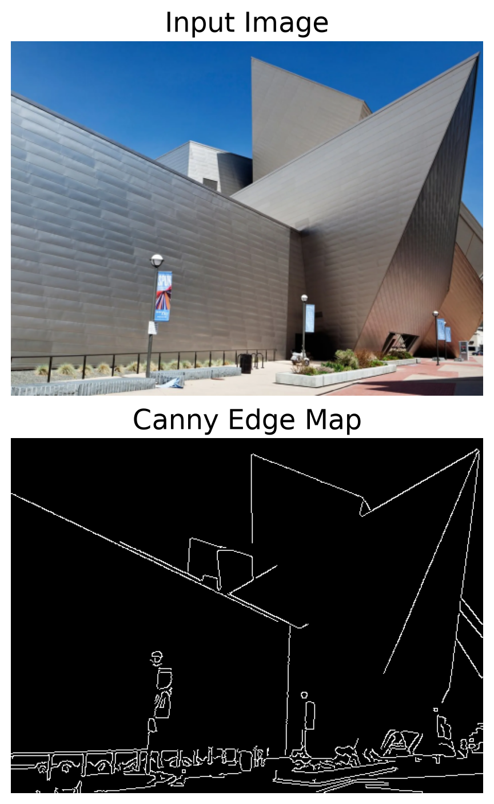
Step 1: Gaussian Derivative Filters
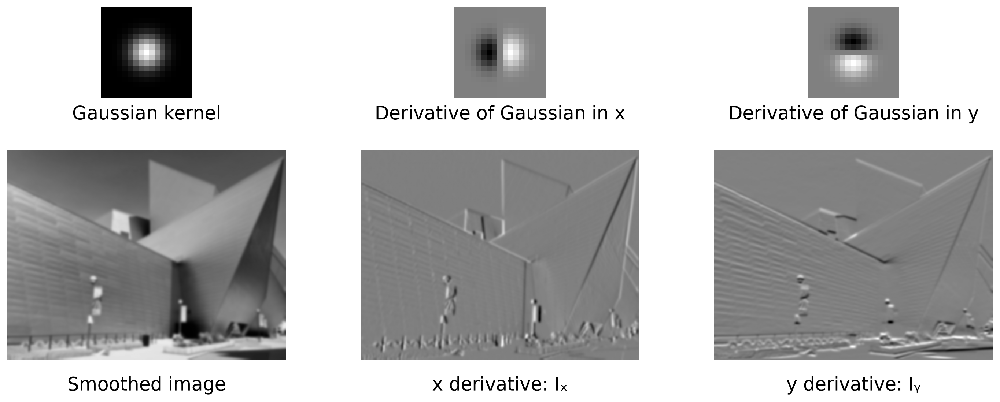
- Gaussian smoothing uses a user-provided \(\sigma\) value.
- The derivative-of-Gaussian filters measure intensity changes in x and y while suppressing fine-scale noise.
- Each kernel filters the original grayscale image directly. Both outputs have the same size.
Step 2: Gradient Magnitude and Direction
\[ M=\sqrt{I_x^2+I_y^2}, \qquad \theta=\operatorname{atan2}(I_y,I_x) \]
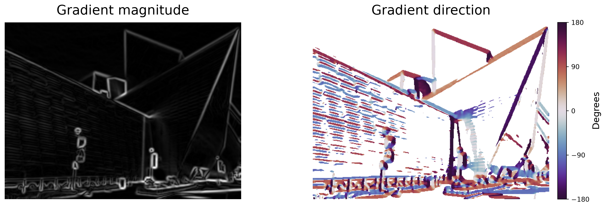
- Magnitude measures the strength of the local intensity change.
- Direction points across the edge, perpendicular to its local orientation.
Responses often form a thick ridge. Which pixels should represent the edge?
Step 3: Non-Maximum Suppression
Non-max supression keeps a pixel only if its gradient magnitude is a local maximum along the gradient direction.
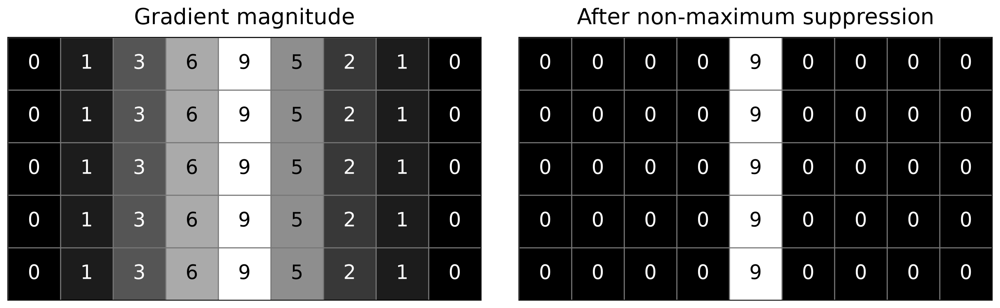
- Here, the gradient points horizontally, so compare each pixel with its left and right neighbors.
- Keep \(9\) because it exceeds both \(6\) and \(5\). Suppress the smaller responses to zero.
- Compare across the edge, not along it.
The retained values are still gradient magnitudes, not a binary edge map.
Comparing Along an Arbitrary Direction
The comparison locations may fall between pixel centers:
\[ (x_\pm,y_\pm)=(x\pm\cos\theta,\ y\pm\sin\theta). \]
Bilinear interpolation estimates the magnitude from four neighboring pixels.
First, interpolate horizontally:
\[ \text{Top}=0.75(2)+0.25(6)=3 \]
\[ \text{Bottom}=0.75(4)+0.25(8)=5 \]
Then, interpolate vertically:
\[ M(0.25,0.5)=0.5(3)+0.5(5)=4 \]
It is a weighted average: closer pixels contribute more.
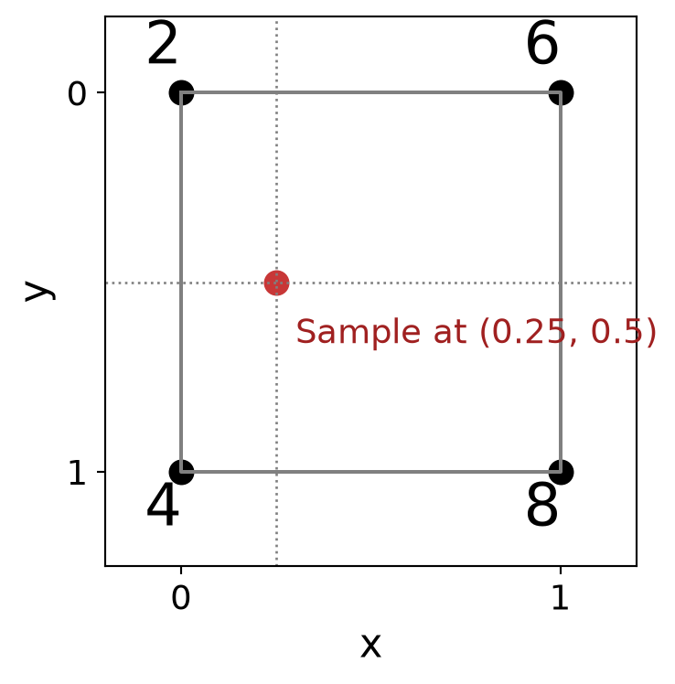
Non-Maximum Suppression on the Image
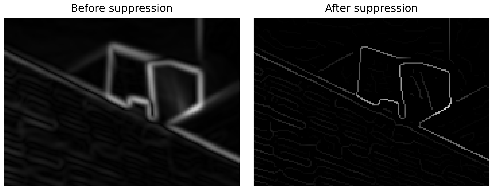
- The broad ridges become thin responses.
- Small responses from texture and noise can still remain.
Which of these responses should we keep?
Step 4: Two Thresholds
Apply user-provided low & high thresholds to the magnitude (after non-maximum suppression).
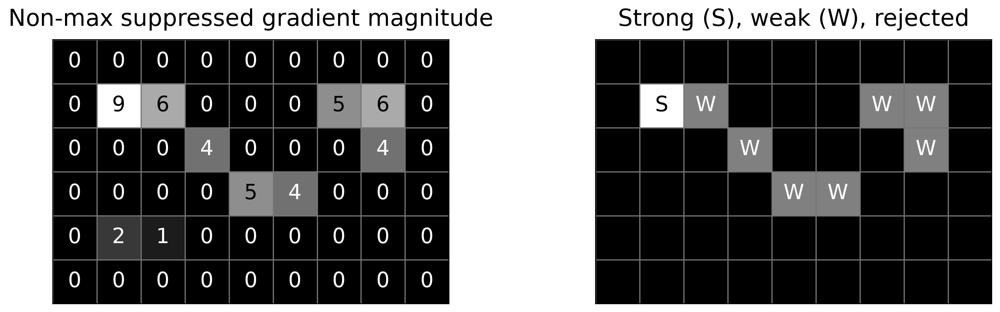
- For this example, say \(T_{\mathrm{low}}=3\) and \(T_{\mathrm{high}}=8\), and denote magnitude by \(N\).
- Strong: \(N\geq T_{\mathrm{high}}\). Keep as an edge seed.
- Weak: \(T_{\mathrm{low}}\leq N<T_{\mathrm{high}}\). Decide using connectivity.
- Rejected: \(N<T_{\mathrm{low}}\).
Should every weak pixel become an edge?
Hysteresis: Keep Weak Pixels Connected to Strong Ones
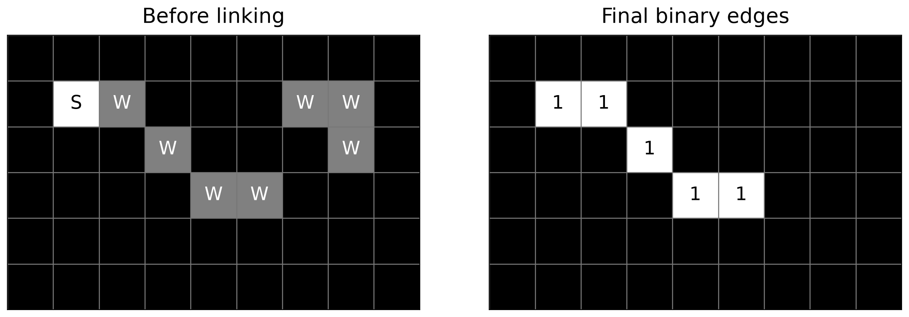
- Start from strong pixels and follow chains of weak pixels.
- Horizontal, vertical, and diagonal neighbors count as connected.
- Keep the entire connected chain, even when a weak pixel is several steps from a strong pixel.
- Remove weak-only groups. Do not bridge gaps of rejected pixels.
The output is a binary edge map: retained edge pixels are 1, and all other pixels are 0.
Why Use Hysteresis?
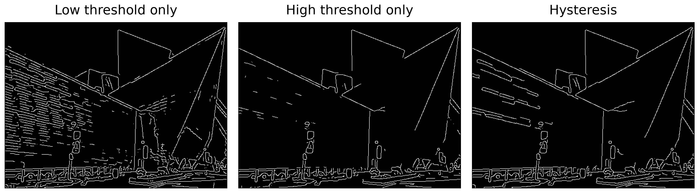
- A low threshold preserves weaker boundaries but also retains more unwanted responses.
- A high threshold rejects more responses but can break edge curves.
- Hysteresis retains weak sections when a chain connects them to a strong edge seed.
Connectivity provides evidence that a weak response belongs to an edge.
The Complete Canny Pipeline
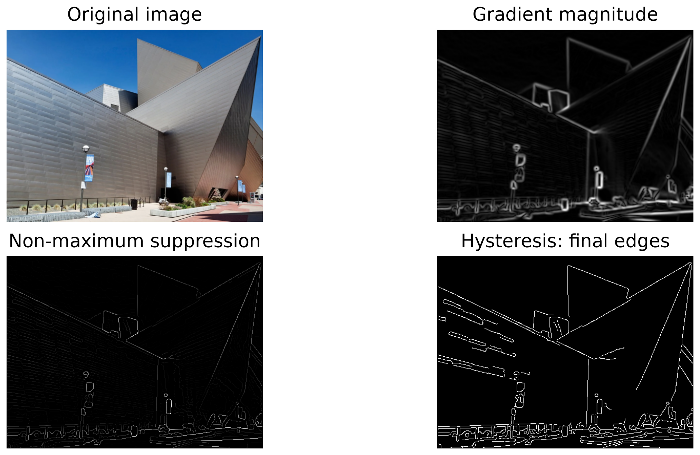
Which detected edges correspond to object boundaries, and which come from surface texture or illumination?
Choosing the Smoothing Scale
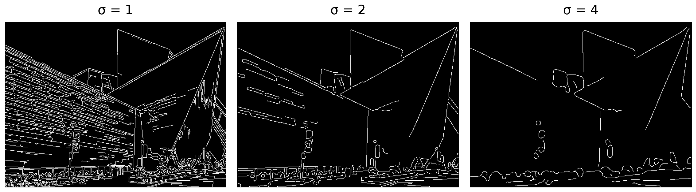
The 2 thresholds are fixed across the examples above.
- Smaller \(\sigma\) preserves fine details and more texture.
- Larger \(\sigma\) suppresses fine detail and can merge nearby boundaries.
- Smoothing also changes gradient strength, so thresholds may need adjustment.
Which scale best matches the boundaries you want to detect?
Canny in OpenCV
# Each setting is: (sigma, low, high).
settings = [
(1.0, 20, 50),
(3.0, 20, 50),
(1.0, 40, 100)]
outputs = []
# I_u8 is the grayscale image in uint8 format.
for sigma, low, high in settings:
blurred = cv2.GaussianBlur(
I_u8, (0, 0), sigmaX=sigma
)
result = cv2.Canny(
blurred,
threshold1=low,
threshold2=high,
apertureSize=3,
L2gradient=True
)
outputs.append(result)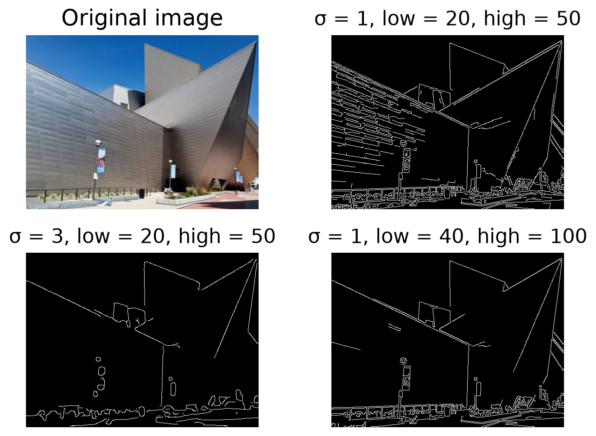
sigmacontrols the explicit Gaussian smoothing before Canny.apertureSize=3selects 3×3 Sobel derivatives;L2gradient=Trueuses \(\sqrt{I_x^2+I_y^2}\).- Thresholds apply to gradient strength, not pixel brightness.
- For tuning thresholds, note that OpenCV uses uint8 input, with values from 0 to 255.
Key Takeaways
Edges are local intensity changes. They can arise from changes in depth, surface orientation, reflectance, or illumination. They do not always correspond to object boundaries.
Image derivatives can be computed by filtering. Gradient magnitude measures change strength, while gradient direction points across the local edge.
Smoothing reduces sensitivity to noise. Larger \(\sigma\) suppresses more detail and can merge nearby boundaries.
First-derivative extrema and second-derivative zero crossings provide ways to locate intensity transitions.
Canny produces a binary edge map: Gaussian derivatives, gradient magnitude and direction, non-maximum suppression, then hysteresis thresholding.
Non-maximum suppression thins responses across edges. Hysteresis keeps weak responses connected to strong ones.
Parameter Choices Matter
Choose the smoothing scale and thresholds for the boundaries you want to detect. No single setting captures every meaningful boundary while rejecting all texture and noise.
Computer Vision; Colorado School of Mines | Kaveh Fathian